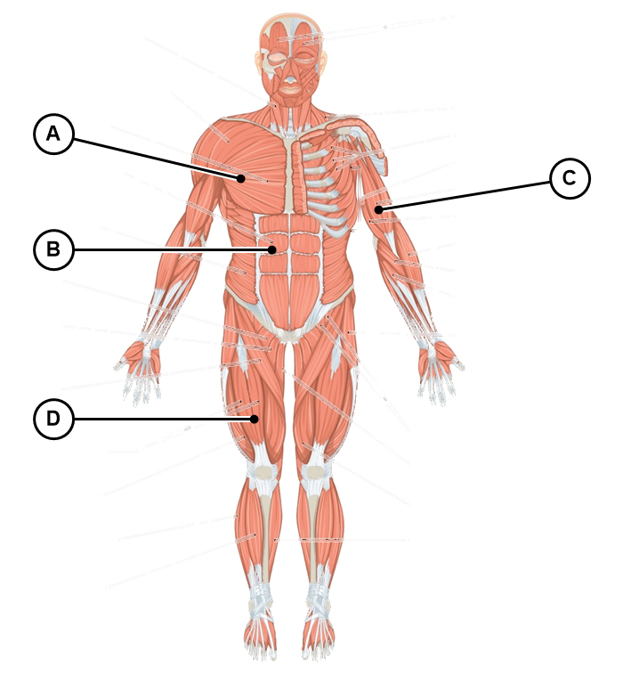
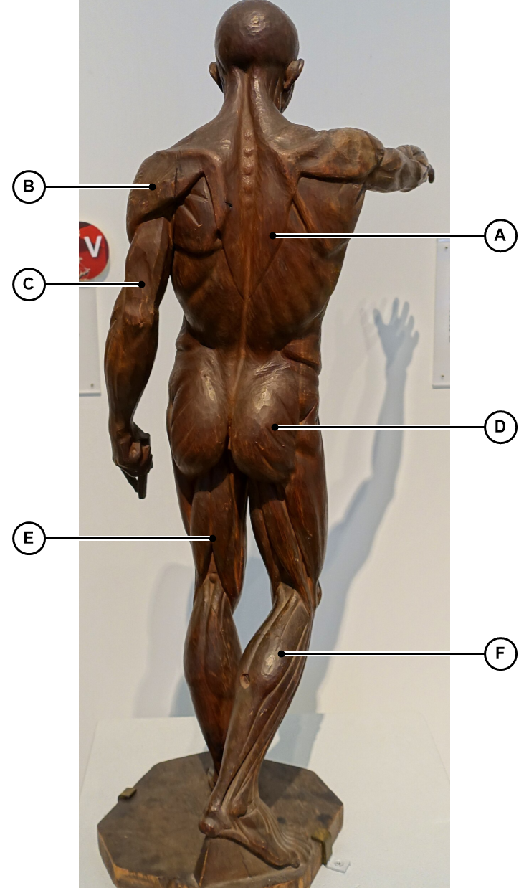

Do a biceps curl slowly. What happens to the muscle on the back of your upper arm while your biceps shortens? Write what you notice.
How do muscles work together to produce smooth, coordinated body movements?
Students will be able to identify major skeletal muscles and their actions, by touring the body region by region, so that they can explain how muscles work in pairs or groups to produce coordinated movement.
Primary actions: facial expressions, chewing, and head movement.
| Muscle | Job |
|---|---|
| Abdominals | Support trunk and stabilize posture |
| Obliques | Assist with trunk rotation and bending |
| Latissimus dorsi | Aid in arm movement and extension |
| Trapezius | Elevate and rotate the shoulder blades |
Primary actions: breathing, posture, movement of trunk and shoulders.
| Muscle | Job |
|---|---|
| Deltoids | Shoulder muscles for arm movement |
| Pectorals | Chest muscles for pushing actions |
| Biceps | Front arm muscles for flexion |
| Triceps | Back arm muscles for extension |
Primary actions: arm flexion, extension, rotation, and grasping.
| Muscle | Job |
|---|---|
| Quadriceps | Extend the knee joint |
| Hamstrings | Flex the knee joint |
| Gluteals | Stabilize hip movements |
| Calves | Control ankle movement |
Primary actions: walking, running, and maintaining posture.


Muscles only pull — they cannot push. So they work in groups: synergists assist the main mover, and antagonists do the opposite action and relax to let it work.
In a biceps curl, the biceps is the prime mover and shortens to bend the elbow. The triceps is the antagonist: it does the opposite job, straightening the elbow, and relaxes during the curl.
What is wrong with this claim? An antagonist and a synergist are not the same thing — what does each one actually do?
| Prime mover | Antagonist | Joint |
|---|---|---|
| Biceps | ? | Elbow |
| Quadriceps | ? | Knee |
| ? | Gluteals (partial) | Hip |
Skeletal muscles work in groups. A prime mover does the action, synergists assist it, and antagonists do the opposite action and relax. Muscles can only pull, so pairs like the biceps and triceps, or the quadriceps and hamstrings, move a joint in both directions.
Smooth movement is teamwork. Every pull needs a partner that lets go.
Every movement, from a smile to a sprint, involves multiple muscles working together with precision. Name one antagonist pair from today and explain what each muscle does.
Record today's warm-up and exit ticket on your weekly page. It is turned in on Fridays.